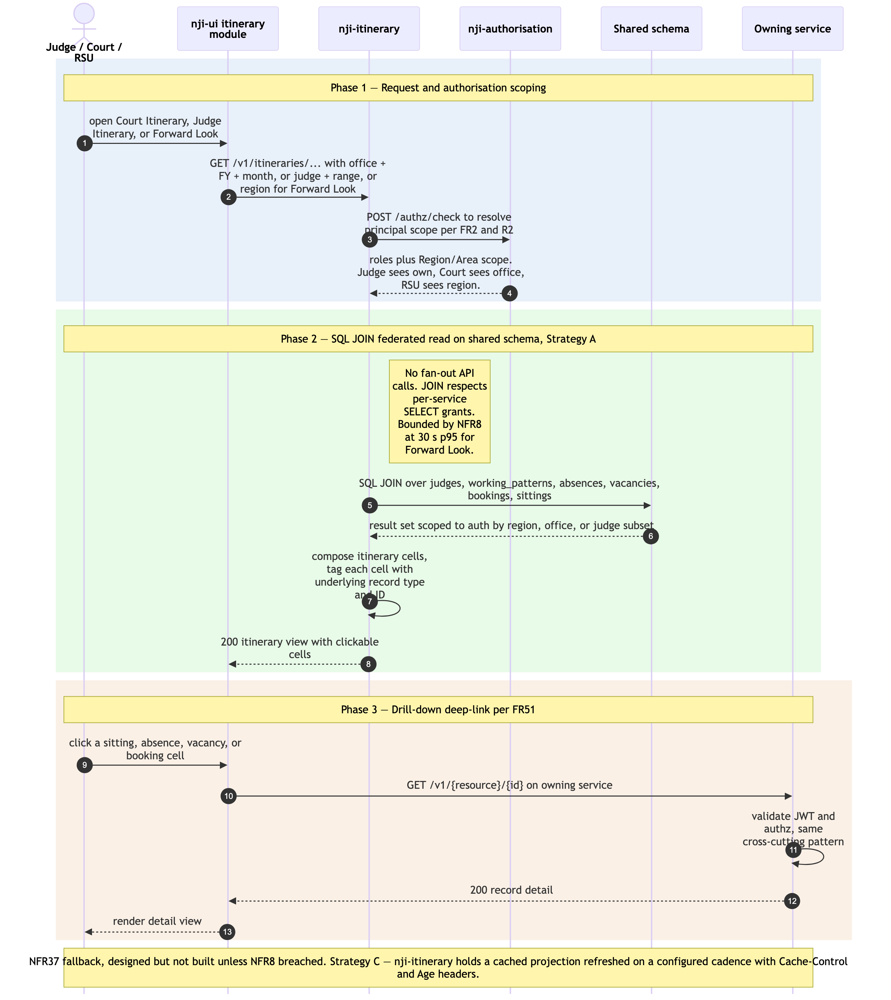

Itinerary federated read — Court Itinerary, Judge Itinerary, Forward Look
Sequence diagram of how itinerary views are served by
nji-itinerary. The service holds no own
tables — it composes Court Itinerary, Judge Itinerary, and
Forward Look views by SQL-JOINing across judges,
working_patterns, absences,
vacancies, bookings, and sittings
on the shared schema (architecture Principle 1). This is the canonical
Strategy A federated read pattern; NFR8 bounds it at ≤ 30 s p95
for Forward Look across a Region, with NFR37 specifying Strategy C
cached projection as the documented fallback if measurement breaches
NFR8.
The as-is equivalents are Module 3 Court Itinerary, Module 4
Judge Itinerary, and the JFL Judges Forward Look
sub-module in ../../../docs/architecture/asis/functional-modules.md.
Three phases: (1) request + authorisation scoping; (2) SQL JOIN federated read; (3) drill-down deep-link into the underlying record.
Not in this diagram
- Strategy C cache fallback — designed and documented
(NFR37) but not built unless measurement shows NFR8 breached. Adding it
would introduce a cache invalidation flow and a freshness header pattern
(
Cache-Control+Age) — out of scope for the MVP architectural diagram. - Excel / PDF export (FR52) — a separate render step on top of the same data; same shape as Phase 2's read, then format-shifted. Not drawn separately.
- Home dashboard tile aggregation (FR55) — same pattern as this diagram with different aggregations; functionally a sub-case of Court Itinerary monthly view.
- Cross-Region judge linking display (FR18) — the
federated read shows linked-judge sittings transparently; the linking
record itself is created in
./judge-onboarding-and-sitting-generation.md.
Cross-cutting steps omitted for clarity
- Authentication + per-request authorisation — User's
JWT is validated by
nji-itinerary'sJWTFilterand resolved to a principal with roles + Region/Area scope. Authorisation scoping is critical for this flow: judges see only their own itinerary (R2), courts see their office, RSU sees their region. The diagram's "auth scoping" note captures the architectural rule; full mechanics are in./user-authentication-and-authorisation.md. - All UI → service calls flow through Azure API Management.
- Drill-down requests to the underlying service (e.g.
nji-sittingfor a sitting cell click) follow the same auth pattern.

Source: ./itinerary-federated-read.mmd
(Mermaid). Regenerate with
mmdc -i itinerary-federated-read.mmd -o itinerary-federated-read.png -w 2400 -s 2 --backgroundColor white.
Phase summary
| Phase | Driver | Architectural rule | Outcome |
|---|---|---|---|
| 1 — Request + authorisation scoping | User (Judge / Court / RSU) | FR48–FR50 — select Office + Financial Year + Month (Court
Itinerary), Judge + date range (Judge Itinerary), or Region (Forward
Look). nji-authorisation returns roles + Region/Area scope
per FR2/R2. |
nji-itinerary receives the request with the authorised
scope (e.g. RSU sees own region; Judge sees only own profile) |
| 2 — SQL JOIN federated read | nji-itinerary (no own tables) |
Principle 1 + 2 — direct SQL JOINs across judges,
working_patterns, absences,
vacancies, bookings, sittings;
respects per-service SELECT grants; bounded by NFR8 (≤ 30 s p95) |
Composed itinerary cells returned to UI, each cell tagged with the underlying record type + ID for drill-down |
| 3 — Drill-down deep-link | User | FR51 — itinerary cells are clickable; UI navigates to the underlying record's detail view in the owning module (Sitting / Absence / Vacancy / Booking) | User sees the underlying record (e.g. opens the
nji-sitting confirmation screen for a sitting cell, or the
nji-absence detail for an absence cell) |
Where to find more detail
| Detail | Location |
|---|---|
nji-itinerary repo purpose and key functions (no own
tables — SQL JOINs) |
../repository-strategy.md
Phase 7 row |
| Strategy A federated read and Strategy C cache fallback (NFR8 + NFR37) | ../../architecture.md
→ Step 4 Data Architecture; PRD NFR8,
NFR37 |
| Per-service DB SELECT grants underpinning the SQL JOINs | ../data-tables.md →
Authoritative Table Ownership Mapping |
| Authorisation scoping per role (R2 — judges see own; courts see office; RSU sees region) | PRD FR2, FR49; ./user-authentication-and-authorisation.md
Phase 3 |
| Itinerary UI module structure | ../repo-structure.md →
nji-ui/src/modules/itinerary/ |
| Upstream producers — judge profiles + working-pattern-driven sittings | ./judge-onboarding-and-sitting-generation.md |
| Upstream producers — operational workflow records | ./absence-to-reconciliation.md;
./salaried-sitting-confirmation.md |
| Related read flow — MI Feed / Reports (same SQL-JOIN-on-shared-schema pattern but aggregate-only) | ./mi-feed-and-reports-consumption.md |
| As-is equivalents (Module 3 Court Itinerary, Module 4 Judge Itinerary + JFL) | ../../../docs/architecture/asis/functional-modules.md
→ Modules 3, 4 |
Source: _bmad-output/planning-artifacts/architecture/sequence-diagrams/itinerary-federated-read.md